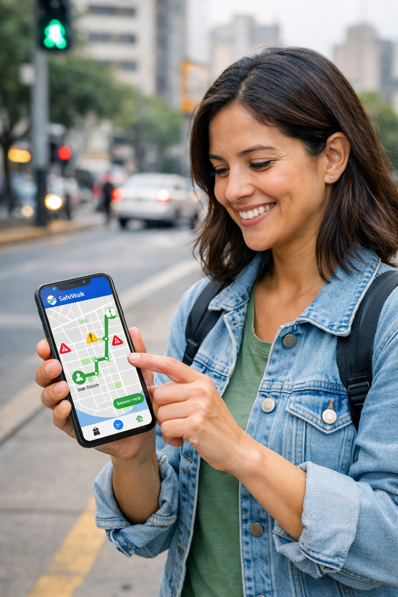

Misión
Desarrollar una aplicación web accesible que permita identificar, reportar y visualizar zonas de riesgo peatonal en tiempo real.
SafeWalk es una plataforma que muestra las rutas seguras para transitar por las ciudades del Perú. Nuestra prioridad es la seguridad de nuestros usuarios y la mejora de los distritos.

Somos una startup que inició en la Universidad Peruana de Ciencias Aplicadas en el año 2026, por un grupo de estudiantes de las carreras de ingeniería de software y sistemas.
Desarrollar una aplicación web accesible que permita identificar, reportar y visualizar zonas de riesgo peatonal en tiempo real.
Consolidar SafeWalk como plataforma referente en seguridad peatonal urbana en el Perú, promoviendo ciudades más seguras mediante tecnología colaborativa.
Los reportes de los usuarios alimentan un sistema colectivo que fortalece la seguridad peatonal.
Plataforma web y móvil, diseñada con interfaces claras y tipografía legible para todos.
Priorizamos la protección de los peatones, ofreciendo rutas seguras y alertas preventivas.
Herramientas pensadas para informarte antes, durante y después de tu recorrido.
Permite visualizar en tiempo real las zonas urbanas con mayor nivel de riesgo peatonal. El mapa utiliza un estilo desaturado para que las alertas y rutas seguras resalten claramente. Identifica veredas deterioradas, cruces sin señalización o puntos inseguros antes de desplazarte.
Facilita que cualquier persona registre incidencias en máximo tres pasos, siguiendo un flujo rápido y accesible. Los reportes se integran en un sistema colectivo, reforzando la colaboración ciudadana y permitiendo que las autoridades tengan información más precisa sobre la infraestructura.
Notificaciones inmediatas —snackbars o banners— que advierten al usuario sobre riesgos cercanos, como zonas inseguras o incidentes recientes. Diseñadas para captar la atención rápidamente y ayudar en la toma de decisiones en movimiento.
Ofrece alternativas confiables de desplazamiento, priorizando la seguridad peatonal. Las rutas se destacan en verde dentro del mapa y se actualizan con base en los reportes ciudadanos, garantizando que elijas trayectos con menor exposición al riesgo.
Prueba una demostración del mapa de SafeWalk sin necesidad de registro previo. Los datos son de ejemplo. Para las funcionalidades completas, descarga la app móvil.
Visualiza las zonas de riesgo (rojo), advertencia (amarillo) y rutas seguras (verde) directamente en el mapa. Cuando estés listo, crea tu cuenta gratuita para reportar incidencias y recibir alertas personalizadas.
Los reportes ciudadanos se actualizan en el mapa en segundos, brindando información siempre vigente.
SafeWalk es 100% gratuito para todos. Sin costos ocultos ni suscripciones.
Incluye modo Ruta familiar que prioriza cruces seguros e iluminación en los recorridos con niños.
Al publicar un reporte, contribuyes con tus vecinos de la zona para una mayor seguridad colectiva.
Personas que se desplazan diariamente por la ciudad como parte de su rutina laboral, educativa o personal. Necesitan rutas seguras, información preventiva sobre zonas de riesgo y alertas rápidas para tomar decisiones en movimiento.
Empieza a caminar seguroAdultos responsables que transitan con menores en espacios urbanos, donde la seguridad peatonal es crítica. Buscan información confiable sobre infraestructura segura, rutas alternativas y reportes ciudadanos que les ayuden a evitar zonas inseguras.
Protege a tu familiaSafeWalk me da tranquilidad cuando camino con mis hijos. Ahora puedo elegir rutas seguras y recibir alertas sobre zonas peligrosas. Es como tener un guía confiable siempre conmigo.
Uso SafeWalk todos los días para ir a clases. Me ayuda a evitar zonas inseguras y a encontrar rutas más rápidas y seguras. Es una herramienta indispensable para quienes caminamos por la ciudad.
Seis pasos para caminar con confianza por tu ciudad.
Crea tu cuenta con tu correo o accede fácilmente con Google o Facebook.
Permite que la app detecte tu posición para mostrarte zonas de riesgo y rutas seguras cercanas.
Visualiza las zonas de riesgo (rojo), advertencia (amarillo) y rutas seguras (verde).
Si ves veredas dañadas o cruces inseguros, repórtalo en tres pasos: completar, subir foto y enviar.
La app te notificará sobre riesgos cercanos para tomar decisiones seguras en tiempo real.
Usa las recomendaciones del sistema para desplazarte por Lima con confianza y tranquilidad.
Consulta un resumen de incidencias reportadas por la comunidad y visualiza las zonas con mayor riesgo para tomar mejores decisiones antes de desplazarte.
¿Tienes dudas o sugerencias? Completa el formulario y te responderemos pronto.